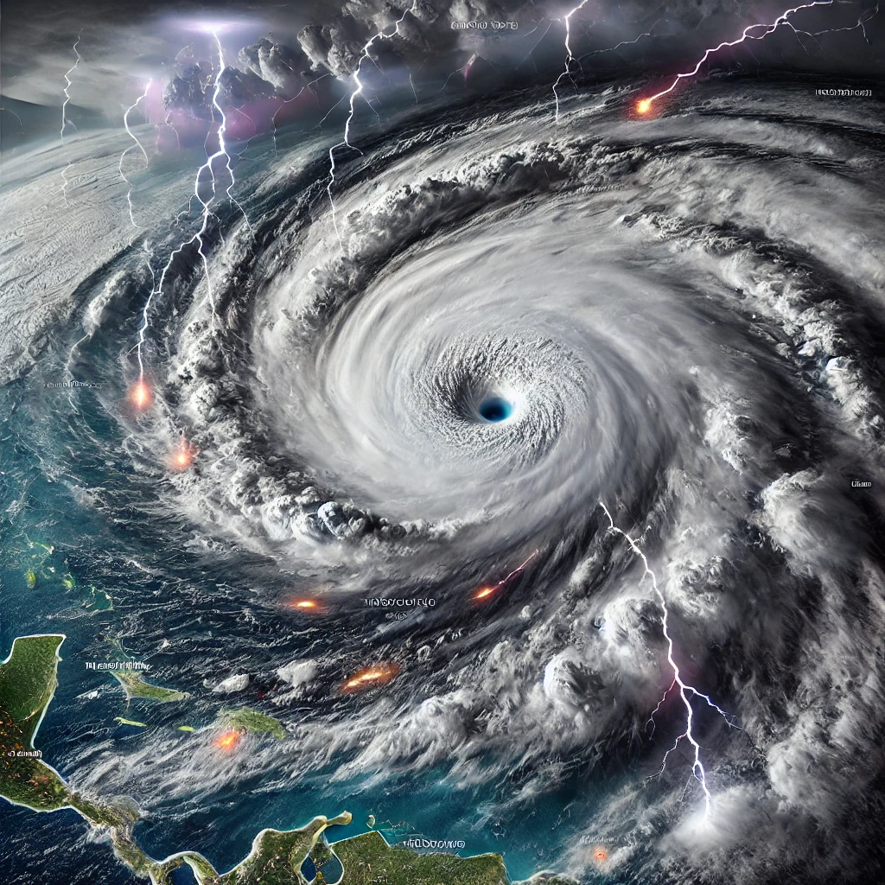

Welcome to The Weather Event Tracker
Select a tab from the sidebar to explore more information on weather events, damages, and trends.
This page focuses on analyzing the impact of hurricanes in terms of wind speeds, pressure levels, fatalities, and economic losses.
 Wunderground
Wunderground Census API
Census API Lucidchart
Lucidchart